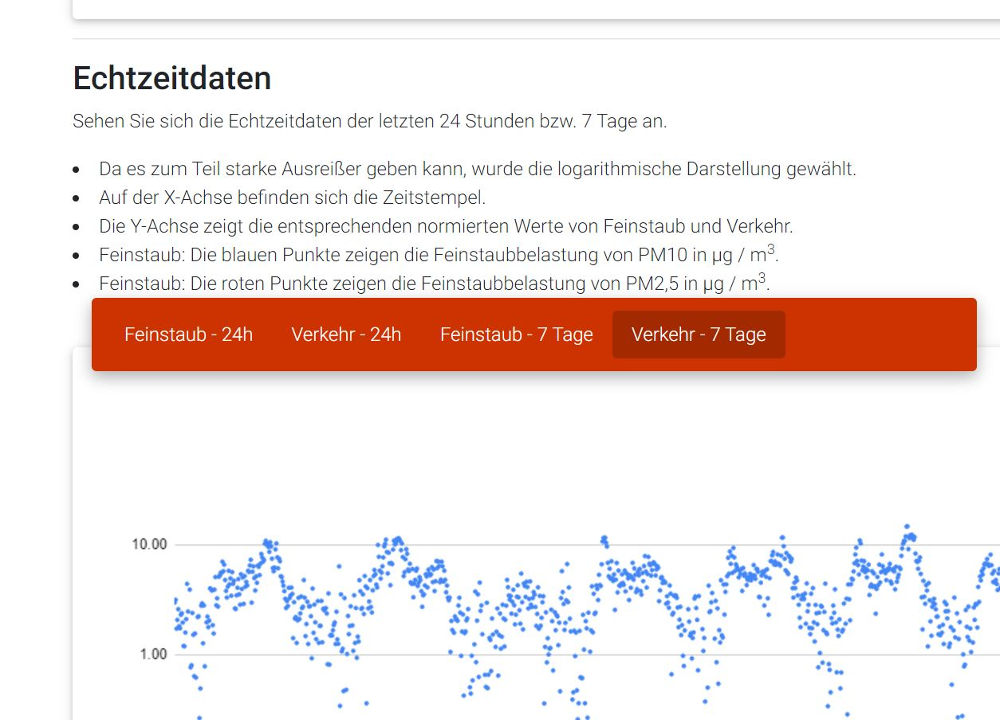

Correlation Calculator
In Logistics2, we had the task of dealing with issues of health and sustainability in the field of transport and logistics. Fortunately, the professor agreed that if I could find a suitable project I could code something.
So I chose to demonstrate the effect of road traffic on the particulate matter content in the air. I have developed a correlation calculator that takes the relevant data from freely available APIs, evaluates it, saves it and outputs it to a front end.
Feel free to check out the project (german) and the code on Github.
Technologies:
Backend:
- - JavaScript
- - googleapis, google-spreadsheets, promisify, node-fetch, moment
- - Google Cloud Platform -> f1-micro (small virtual machine)
Frontend:
- - HTML5 & CSS3, JavaScript
- - mdBootstrap, gulp
- - CI/CD -> git-Netlify-pipeline
APIs used:
- - here (traffic data)
- - luftdaten.info (air data)